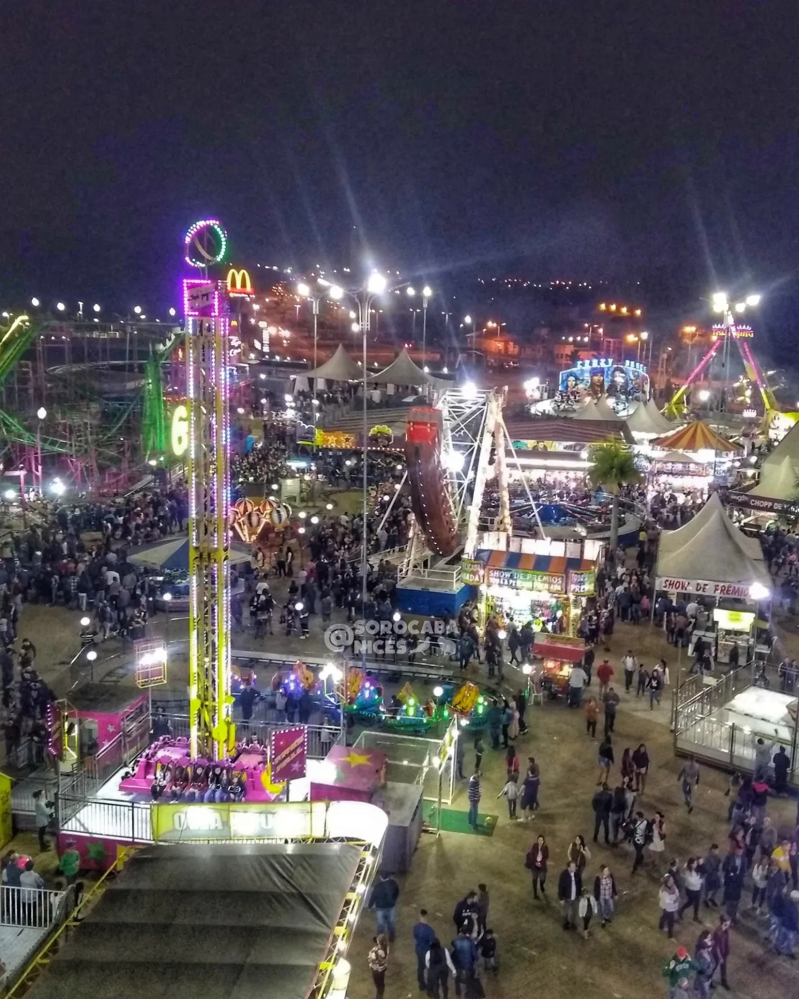

Sobre nossa Festa
A festa Junina de Votorantim está voltando pela 105º vez neste ano de 2022, começando no dia 25/05 e tendo seu encerramento no dia 19/06.
Com os seguintes horários:
- Quarta a Sexta: a partir das 19H
- Sabado: a partir das 14H
- Domingo: a partir das 12H
Sobre os Shows
Nesta edição a Festa Junina terá a apresentação de 14 Shows distribuídos pelos dias do evento. Terão seu começo no dia 27/05 e seu encerramento em 19/06.
Veja tudo
